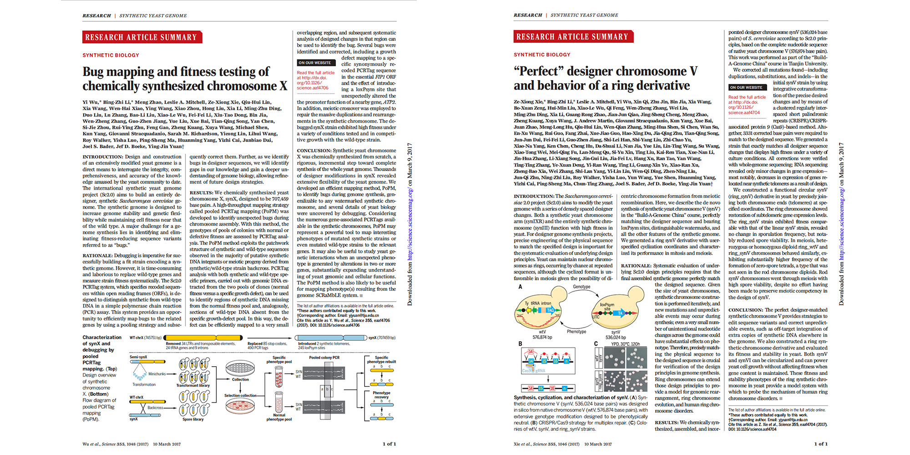

- 
-

-

-

-

-

You are accessing a non-profit web site which is based on GDC data portal hosted by National Cancer Institute, USA. All data was downloaded from GDC public database. Please make sure you are aware of and obey the policy of GDC data portal. Please go to GDC Support for more information.
Unauthorized users of this web site should have no expectation of privacy regarding any communications or data processed by this web site.
Anyone accessing this web site expressly consents to monitoring of their actions and all communication or data transiting or stored on or related to this web site and is advised that if such monitoring reveals possible evidence of criminal activity, we may provide that evidence to law enforcement officials.
Unauthorized attempts to upload information, change information, or use of this web site may result in disciplinary action, civil, and/or criminal penalties. Please be advised that any research publication using the results made by our provided function should mention the URL in the “Materials and Methods” section and in the ”Acknowledgement” section.
Contact Click Support for more information.
Until now, all data was downloaded from the “Legacy GDC portal” which was updated before 10/05/2016. New updated data is coming!
Gene expression is the level 3 data preprocessed by TCGA was used which was measured by the platform Illumina HiSeq 2000 RNA Sequencing Version 2.
The level 3 CNV (Copy Number Variation) data was measured by Affymetrix Genome-Wide Human SNP Array 6.0
The level 2 Methylation data was collected via the HumanMethylation 450 platform.
More category data is coming!